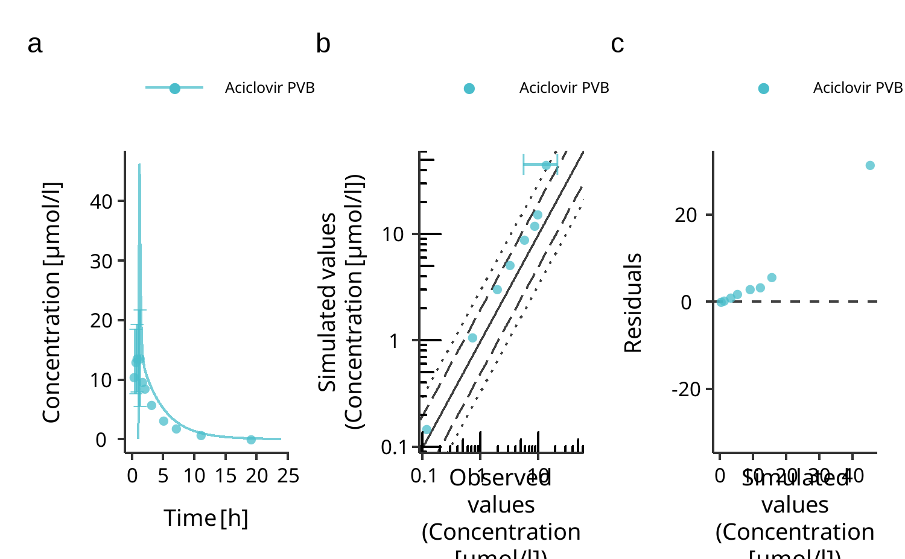

The esqlabsR package facilitates and standardizes the modeling and simulation of physiologically based kinetic (PBK) and quantitative systems pharmacology/toxicology (QSP/T) models implemented in the Open Systems Pharmacology Software (OSPS).
The esqlabsR package is designed for PBK modelers who use the OSPS suite. By using this package, you can streamline your modeling and simulation (M&S) workflow and ensure standardized and reproducible practices.
The package provides functions to:
- Design, import and run Simulations,
- Generate standardized plots and other reporting materials,
- Interact with the OSPS features using simple Excel files.
To get started with the esqlabsR package, please follow the Get Started tutorial.
Installation
Install the package
You can install the package by running:
install.packages("pak")
pak::pak("esqLABS/esqlabsR@*release")The latest development version of the package can also be installed with:
pak::pak("esqLABS/esqlabsR")Note: For projects created for version 3 of esqlabsR package, refer to esqlabsRLegacy.
Usage
You can start with the “Get Started” vignette: vignette("esqlabsR").
esqlabsR workflows require a specific project structure. You can initialize a new project by running:
esqlabsR::initProject()This will create the required folder structure and files for your project in the working directory from where you run the command.
Below is a simple example of how to work with the package:
# load esqlabsR
library(esqlabsR)
# Load excel-based configuration
# The function `exampleProjectConfigurationPath()` returns the path to the example project
# configuration included in the package. Replace the variable `configurationPath`
# with the path to you project configuration file.
configurationPath <- exampleProjectConfigurationPath()
myProjectConfiguration <-
createProjectConfiguration(configurationPath)
# Define which scenarios to run
scenarioNames <- c("TestScenario")
# Set scenario names to NULL if you want to simulate all scenarios defined in the
# excel file
# scenarioNames <- NULL
# Create `ScenarioConfiguration` objects from excel files
scenarioConfigurations <- readScenarioConfigurationFromExcel(
scenarioNames = scenarioNames,
projectConfiguration = myProjectConfiguration
)
# Define custom parameters for the scenarios. These parameter will be applied
# additionally to the paremetrization specified in the Excel files.
customParam <- list(
paths = c(
"Aciclovir|Lipophilicity"
),
values = c(
-0.1
),
units = c(
"Log Units"
)
)
# Create simulation scenarios defined in the excel files and apply the custom parameters
myScenarios <- createScenarios(
scenarioConfigurations = scenarioConfigurations,
customParams = customParam
)
# Adjust simulation run options, if necessary.
# E.g. disable check for negative values if required
simulationRunOptions <- ospsuite::SimulationRunOptions$new()
simulationRunOptions$checkForNegativeValues <- FALSE
# Run simulations
simulatedScenariosResults <- runScenarios(
scenarios = myScenarios,
simulationRunOptions = simulationRunOptions
)
# Save results and store the path to the results for later re-use
outputFolder <- saveScenarioResults(simulatedScenariosResults, myProjectConfiguration)
# Load observed data using the default importer configuration provided with the package. Alternatively, you can load a custom data importer configuration.
dataSheets <- c("Laskin 1982.Group A")
observedData <- esqlabsR::loadObservedData(
projectConfiguration = myProjectConfiguration,
sheets = dataSheets
)
########## Create figures defined in the Plots.xlsx file########
plots <- createPlotsFromExcel(
plotGridNames = c("Aciclovir",
"Aciclovir2"),
simulatedScenarios = simulatedScenariosResults,
observedData = observedData,
projectConfiguration = myProjectConfiguration,
outputFolder = outputFolder,
stopIfNotFound = TRUE
)
plots$Aciclovir
Learn More
You can find more information on specific topics in dedicated vignettes:
- Start with
vignette("esqlabsR-workflow-overview")to learn about the esqlabsR’s streamlined workflow. -
vignette("esqlabsR-project-structure")details the structure and purpose of each component file and directory of an esqlabsR project. -
vignette("esqlabsR-design-scenarios")explains how you can design your own simulations only using excel files. -
vignette("esqlabsR-run-simulations")describes all you need to know to run your customized simulations. -
vignette("esqlabsR-plot-results")explains how to generate visualizations from simulations.
Related Work
esqlabsR relies on the following Open Systems Pharmacology R packages:
Contributing
- Follow the OSPS-R coding standards.
- Our contribution guide can be found here.
Code of Conduct
Please note that the esqlabsR project is released with a Contributor Code of Conduct. By contributing to this project, you agree to abide by its terms.